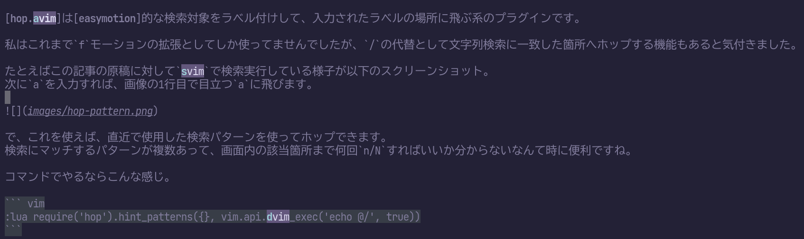

hop.nvimはeasymotion的な検索対象をラベル付けして、入力されたラベルの場所に飛ぶ系のプラグインです。
私はこれまでfモーションの拡張としてしか使ってませんでしたが、/の代替として文字列検索に一致した箇所へホップする機能もあると気付きました。
たとえばこの記事の原稿に対してnvimで検索実行している様子が以下のスクリーンショット。次にaを入力すれば、画像の1行目で目立つaに飛びます。

で、これを使えば、直近で使用した検索パターンを使ってホップできます。検索にマッチするパターンが複数あって、画面内の該当箇所まで何回n/Nすればいいか分からないなんて時に便利ですね。
コマンドでやるならこんな感じ。
:lua require('hop').hint_patterns({}, vim.api.nvim_exec('echo @/', true))私は以下のようにnormalモードのgnにマッピングしてbetter gnとして使ってみることにしました。
vim.keymap.set('n', 'gn', require('hop').hint_patterns({}, vim.api.nvim_exec('echo @/', true)))ENJOY!